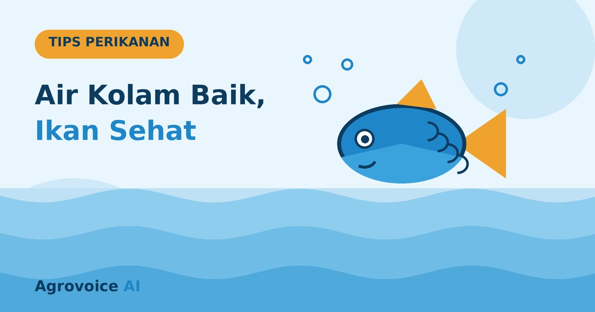

Aplikasi untuk pelaku lapangan
Mengubah percakapan suara di lapangan menjadi catatan dan laporan kegiatan di sektor pertanian, peternakan, dan perikanan.
Jelajahi wawasan seputar pertanian, peternakan, dan perikanan.
Agrovoice adalah platform yang membantu pelaku sektor pertanian, peternakan, dan perikanan mencatat dan melaporkan kegiatan lapangan dengan lebih mudah, cukup dengan berbicara.
Catat kondisi lahan, tanaman, dan kegiatan di lapangan tanpa repot mengetik. Informasi tersimpan rapi sehingga mudah dipantau dan dilaporkan.
Catat kegiatan dan kondisi ternak seperti sapi, kambing, ayam, dan bebek dengan cepat, sehingga perkembangan ternak lebih mudah dipantau.
Catat kegiatan budidaya dan hasil perikanan dengan mudah, dari kolam hingga tambak, agar kondisi usaha selalu terpantau.
Satu platform untuk tiga sektor, dirancang agar sederhana dipakai di lapangan.
Mengubah percakapan suara di lapangan menjadi catatan dan laporan kegiatan di sektor pertanian, peternakan, dan perikanan.
Petani, kelompok tani, dan penyuluh pertanian, serta koordinator dan pimpinan dinas yang butuh data lapangan yang cepat dan faktual.
Peternak, kelompok ternak, dan petugas peternakan, serta koordinator dan pimpinan dinas yang butuh data lapangan yang cepat dan faktual.
Pembudidaya ikan, kelompok pembudidaya, dan penyuluh perikanan, serta koordinator dan pimpinan dinas yang butuh data lapangan yang cepat dan faktual.
Voice-first, bisa dipakai tanpa sinyal (offline-first), memahami istilah lokal, dan bukti kegiatan yang otentik lewat foto, lokasi, dan waktu.
Satu platform untuk pertanian, peternakan, dan perikanan.
Fitur untuk mendukung pencatatan, pemantauan, dan pelaporan kegiatan lapangan di sektor pertanian, peternakan, dan perikanan.
Bicara seperti biasa, ucapan Anda otomatis menjadi laporan terstruktur.
Contoh: kondisi lahan dan tanaman
Contoh: kondisi dan kegiatan ternak
Contoh: kegiatan budidaya dan hasil panen
Mengenali istilah dan sebutan lokal yang dipakai di lapangan.
Contoh: sebutan tanaman dan hama setempat
Contoh: sebutan ternak dan penyakit setempat
Contoh: sebutan jenis ikan dan budidaya setempat
Form dipandu langkah demi langkah sesuai sektor.
Contoh: pencatatan kegiatan tanam
Contoh: pencatatan kegiatan ternak
Contoh: pencatatan kegiatan budidaya
Foto otomatis dilengkapi lokasi dan waktu sebagai bukti kegiatan.
Contoh: foto kegiatan lahan
Contoh: foto kegiatan ternak
Contoh: foto kegiatan budidaya
AI membantu menampilkan kemungkinan masalah dan saran penanganan sesuai sektor. Hasilnya bersifat saran, bukan keputusan akhir.
Contoh: kemungkinan masalah tanaman
Contoh: kemungkinan masalah ternak
Contoh: kemungkinan masalah budidaya
Tetap bekerja di lokasi tanpa sinyal. Data terkirim otomatis saat koneksi kembali.
Contoh: mencatat di lahan yang jauh dari sinyal
Contoh: mencatat di kandang yang sinyalnya lemah
Contoh: mencatat di kolam atau tambak yang sulit sinyal
Pimpinan memantau kegiatan dan sebaran data lapangan.
Contoh: kegiatan dan sebaran data pertanian
Contoh: kegiatan dan sebaran data peternakan
Contoh: kegiatan dan sebaran data perikanan
Data pelaku usaha, kelompok, lokasi, dan riwayat kegiatan tersimpan rapi dalam satu tempat.
Contoh: data petani, petak lahan, dan riwayat musim tanam
Contoh: data peternak, kandang, dan riwayat perkembangan ternak
Contoh: data pembudidaya, kolam atau tambak, dan riwayat tebar dan panen
Laporan disusun, diperiksa koordinator, lalu dicetak sebagai PDF.
Contoh: laporan kegiatan pertanian
Contoh: laporan kegiatan peternakan
Contoh: laporan kegiatan perikanan
Dari lapangan sampai laporan resmi, hanya empat langkah sederhana.
Petugas berkunjung dan cukup berbicara dalam Bahasa Jawa atau Indonesia, tanpa mengetik.
Suara diubah menjadi teks laporan terstruktur. Tetap bekerja tanpa sinyal di sawah, kandang, atau kolam.
Sistem mengenali hama atau penyakit dan menampilkan SOP langkah penanganan.
Data tersinkron saat ada sinyal. Suara asli bisa diputar, dan laporan PDF dilengkapi foto dan GPS.
Pilih sektor untuk melihat materi flyer yang sesuai.
Panduan waktu tanam dan antisipasi perubahan iklim untuk menjaga ketahanan pangan dan hasil panen.
Tata cara aplikasi pupuk urea, NPK, dan organik untuk kesuburan tanah dan efisiensi biaya petani.
Strategi monitoring OPT, musuh alami, dan penggunaan pestisida nabati yang aman dan ramah lingkungan.
Kiat mengenali label varietas unggul tahan hama dan cara perlakuan benih sebelum disemai.
Penerapan sistem irigasi berselang (intermittent) untuk menghemat air dan mencegah kebusukan akar.
Cara praktis mencatat kondisi tanaman cukup dengan suara menggunakan aplikasi Agrovoice.
Standar kebersihan kandang, desinfeksi rutin, dan isolasi hewan ternak baru untuk mencegah penularan penyakit.
Kalender berkala pemberian vaksin PMK, antraks, serta suplemen penambah nafsu makan sapi dan kambing.
Memanfaatkan jerami padi dan limbah pertanian menjadi pakan awetan bergizi tinggi saat musim kemarau.
Kenali gejala awal hipersalivasi, lepuh pada kuku dan lidah, serta SOP penanganan pertama darurat.
Manajemen pemeliharaan anak ayam (DOC), pengaturan ventilasi kandang, dan pencegahan flu burung.
Catat kelahiran, bobot ternak, dan riwayat suntik vitamin tanpa repot menulis di kandang.
Parameter penting kadar oksigen terlarut (DO), pH, salinitas, dan suhu air untuk kelangsungan hidup bibit.
Kalkulasi FCR (Feed Conversion Ratio) dan jadwal pemberian pakan tepat waktu agar ikan tumbuh seragam.
Identifikasi jamur Saprolegnia dan bintik putih (Ich) serta terapi perendaman garam ikan secara higienis.
Teknologi tambak intensif hemat air, perlakuan probiotik pengurai limbah, dan pencegahan kematian dini.
Pemanfaatan tepung ikan, bungkil kedelai, dan dedak halus untuk menekan biaya pakan budidaya air tawar.
Catat tonase panen, sampling bobot mingguan, dan data kematian ikan langsung dengan suara di tepi kolam.
Flyer sektor ini segera hadir.
Artikel terbaru seputar pertanian, peternakan, dan perikanan.

Langkah antisipasi dan strategi pencegahan dini serangan wereng cokelat pada tanaman padi menggunakan metode PHT dan pemanfaatan musuh alami.

Formula pakan konsentrat seimbang dan hijauan bermutu tinggi untuk mempercepat pertambahan bobot harian sapi secara optimal.

Optimasi penggunaan lahan sempit dan efisiensi pakan hingga 30% dengan memanfaatkan mikroorganisme pengurai dalam kolam terpal bulat.
Agrovoice mencakup 3 sektor terintegrasi: pertanian, peternakan, dan perikanan.
Gunakan filter kategori (Tips Tani, Tips Ternak, Tips Perikanan, Berita Dinas, Update Agrovoice) serta kolom pencarian di halaman Berita.
Hubungi kami melalui WhatsApp menggunakan tombol kontak di halaman ini atau melalui nomor resmi yang tertera di bagian footer.
Ya, Agrovoice dirancang secara offline-first. Pencatatan dan rekaman suara di lapangan tetap berjalan tanpa sinyal, lalu tersinkronisasi otomatis saat terhubung kembali.
Hubungi kami untuk pertanyaan seputar Agrovoice dan sektor yang dibahas.
Hubungi via WhatsApp